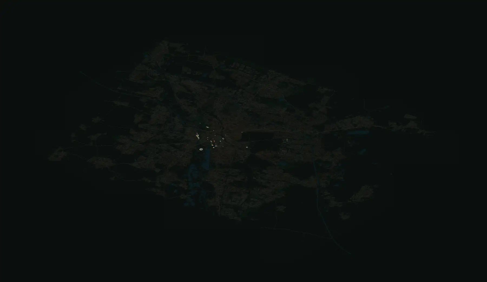

Ziehen · Zoomen · ● antippen
Wahrzeichen
Was möchten Sie sehen?
Bauten von der Marktkirche bis zum Telemax. Antippen: das Haus öffnet sich groß, mit Abendlicht und Geschichte.
Über das Projekt
Eine Stadt, Haus für Haus
Die Karte läuft im Browser, auf dem Telefon wie am großen Bildschirm, ohne App. Sie lässt sich in jede Website einbinden: für Gästeinformation, Hotels oder Stadtführungen.
- 01
Echte Kartendaten
Straßen, Häuser, Bäume und Wasser kommen aus OpenStreetMap, jedes Gebäude in seiner wahren Lage.
- 02
Von Hand gezeichnet
Jedes Wahrzeichen ist einzeln nach Fotos gezeichnet: Giebel, Kuppeln, Fensterreihen, Uhren.
- 03
Abendlicht
In der Detailansicht gehen die Laternen an, dann Fenster und Fassade, Etage für Etage.
- Wahrzeichen
- Gebäude
- 170 000
- Bäume
- 29 000